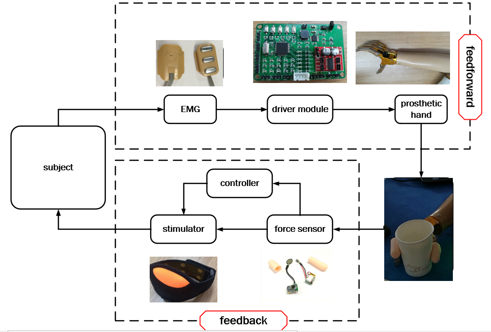
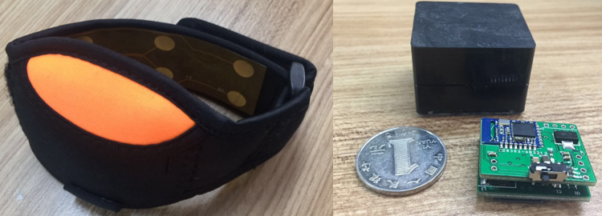
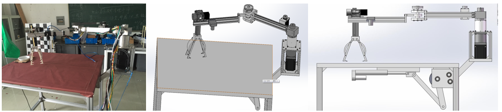

Shaona Cheng
I have got my master’s degree at Shanghai Jiao Tong University, Shanghai, where I conducted research on haptics and wearable devices in the Institute of Robotics at ME school, co-advised by Prof. Dingguo Zhang and Prof. Honghai Liu. Before that, I received my bachelor's degree in mechanical design at Yanshan University. My interests lie in haptics, tactile sensing, wearable systems, human-robot interaction, with dedication to improving human's living standard with robotic intelligence. CONTACT ME | CV DOWNLOAD
Education
Master of Engineering in Mechanical Engineering
Bachelor of Engineering in Mechanical Design, Manufacturing and Automation
Research
In this project, a closed-loop system is designed to improve the grasping control performance of a prosthetic hand, in which user-friendly devices were designed respectively based on modular concept, involving fingertip-wearable sensor module, EMG signal's process module, feedback module based on electro-tactile stimulation, etc. Besides, the artifacts of electrical stimulation from contaminated EMG signals were removed by using a bandpass filter and a cascade notch filter.


Based on the system, two experiemnts on four amputees were conducted to evaluate feasibility as well as the contribution of electro-tactile stimulation feedback to grasping performance of the prosthetic hand.
In this project, a portable and lightweight armband for electro-tactile stimulation was designed, including a lightweight and custom-designed stimulator and five-pairs electrodes made of flexbile printed circuits board. Different from other commercial stimulator, the "iFeel" achieved wearability with portable characteristics, and enabled multiplexing function to render kinds of stimulation to generate haptic feelings.
Two experiments including position discrimination and frequency discrimination were conducted and results showed a high accuracy of position discrimination (success rate > 90%) and frequency levels discrimination (success rate> 90%), indicating that the sensory substitute feedback has the potential to be applied for feedback to achieve more information with high resolution and accuracy.
Creatively designed an intelligent robot that could grasp plates automatically for dining table after brainstorm with team, where I designed the electrical control systems for mechanical arms. The mechanical arms are setup in the bottom of the robotic table, and when robot begins to work, the arms turn to the top of the table to move for grasping or dropping plates. And when there is no task for grasping or dropping plates, the robot arms then go back to the bottom of the table.
The system is used to explore more feedback information like hand gestures as proprioception, and is also applied to hand rehanbilitation. In the project, a stimulator was designed based on functional electrical stimulation (FES), and combined with developed skin-attachable flexible PCB with high-density electrodes, the stimulator can achieve accurate finger’s movement by FES. Besides, a glove-like sensor was designed to capture movement from a master finger so that the relative slave finger can passively move through FES following the master finger's movement. The system can contribute to the hand rehabilition!

Work
Intel Asia-Pacific Research & Development Ltd., Shanghai
Test R&D Engineer, Apr. 2018-Apr. 2020
Publications
- Closed-Loop System for Myoelectric Hand Control Based on Electrotactile Stimulation
Shaona Cheng, Andong Yi, U-Xuan Tan, Dingguo Zhang*
2018 3rd International Conference on Advanced Robotics and Mechatronics (ICARM) | pdf - A Wearable Armband "iFeel" for Electrotactile Stimulation
Shaona Cheng, Dingguo Zhang*
2017 10th International Conference on Human System Interactions (HSI) | pdf